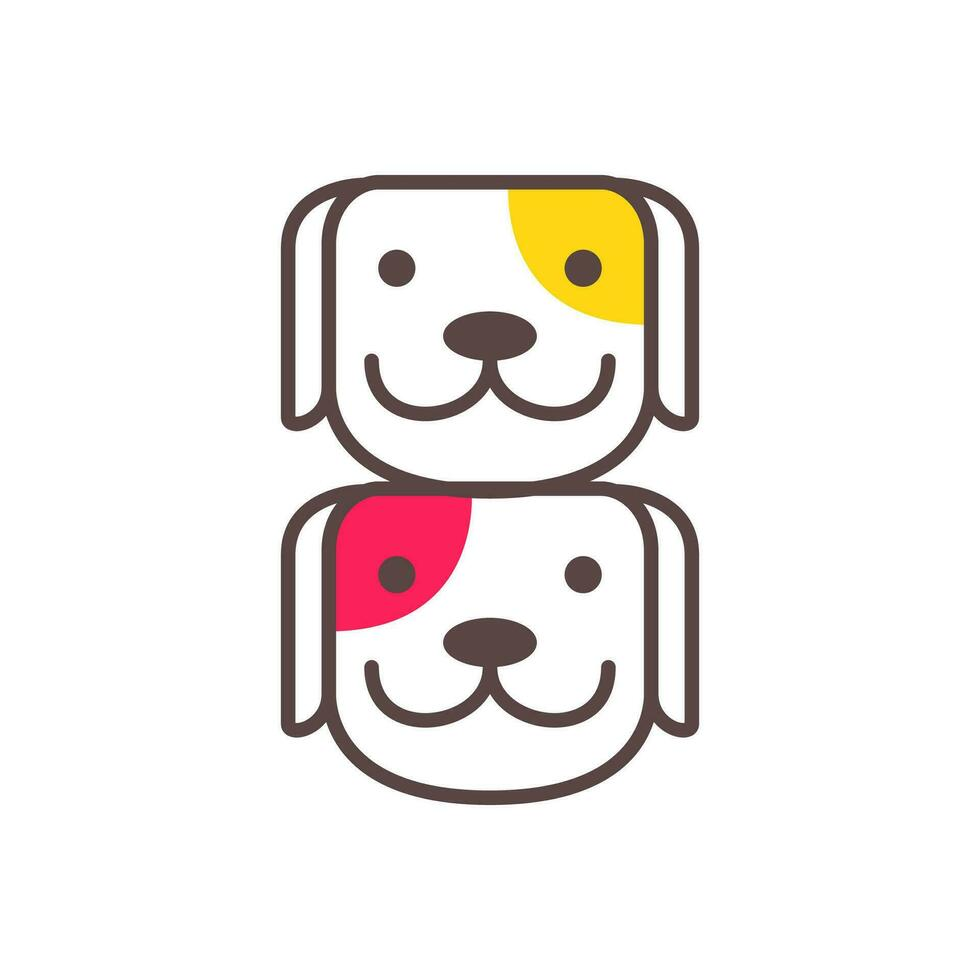

<ion-content class="login-page">
  <div class="login-container responsiveDiv">
    
    <h1 class="titulo">Santuario</h1>

    

    <ion-label>Raza</ion-label>
    <ion-item>
      <<ion-select [(ngModel)]="registroService.registro.raza">
      <ion-select-option *ngFor="let raza of razas" [value]="raza">{{ raza }}</ion-select-option>
    </ion-select>
    </ion-item>

    <ion-label>Género</ion-label>
    <ion-list>
      <ion-radio-group [(ngModel)]="registroService.registro.genero" class="radio-group-horizontal">
        <ion-item style="margin-right: 30px;">
          <ion-label>♂</ion-label>
          <ion-radio slot="start" value="masculino"></ion-radio>
        </ion-item>
        <ion-item>
          <ion-label>♀</ion-label>
          <ion-radio slot="start" value="femenino"></ion-radio>
        </ion-item>
      </ion-radio-group>
    </ion-list>

    <ion-label>Edad</ion-label>
    <ion-list>
      <ion-radio-group [(ngModel)]="registroService.registro.edad">
        <ion-item>
          <ion-radio slot="start" value="cachorro"></ion-radio>
          <ion-label>Cachorro</ion-label>
        </ion-item>
        <ion-item>
          <ion-radio slot="start" value="adulto"></ion-radio>
          <ion-label>Adulto</ion-label>
        </ion-item>
        <ion-item>
          <ion-radio slot="start" value="senior"></ion-radio>
          <ion-label>Senior</ion-label>
        </ion-item>
      </ion-radio-group>
    </ion-list>

    <ion-icon [routerLink]="'/registrocualidades'" style="color: #ffffff; width: 40px; height: 40px" name="arrow-forward-outline"></ion-icon>
  </div>
</ion-content>
